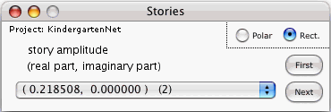

This window allows you to study the set all possible stories for the latest e-case analyzed by the computer.
The stories of this set are listed in the popup of the window. For each story, the popup gives the complex amplitude (either in rectangular or polar coordinates) and the story queue number. In the above example, the popup face shows story number 2, with complex amplitude 0.218508 + 0 i.
When this window is open and a particular story appears on the face of its popup, the computer draws a state name beneath each node name in the Main Window. The state names drawn are those specified by the story whose name appears on the face of the popup.